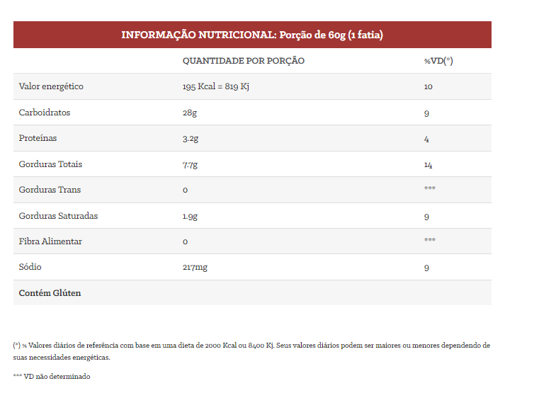

Bolo Mousse De Maracujá
Feito com massa branca fofinha e molhadinha com suco de maracujá, finalizado com uma cobertura de mousse de maracujá. Aprox. 450g. Imagem meramente ilustrativa.

Ingredientes: Farinha de trigo enriquecida com ferro e ácido fólico, leite condensado, açúcar refinado, suco de maracujá industrializado (água, suco reconstituído de maracujá, açúcar, acidulante ácido cítrico, aroma natural, espessante goma xantana), óleo de soja, água, fermento químico em pó (bicarbonato de sódio), ovo em pó desidratado e polpa de maracujá.

Voltar para nossos produtos
 Inicio
Nossa História
Nossos Produtos
Inicio
Nossa História
Nossos Produtos